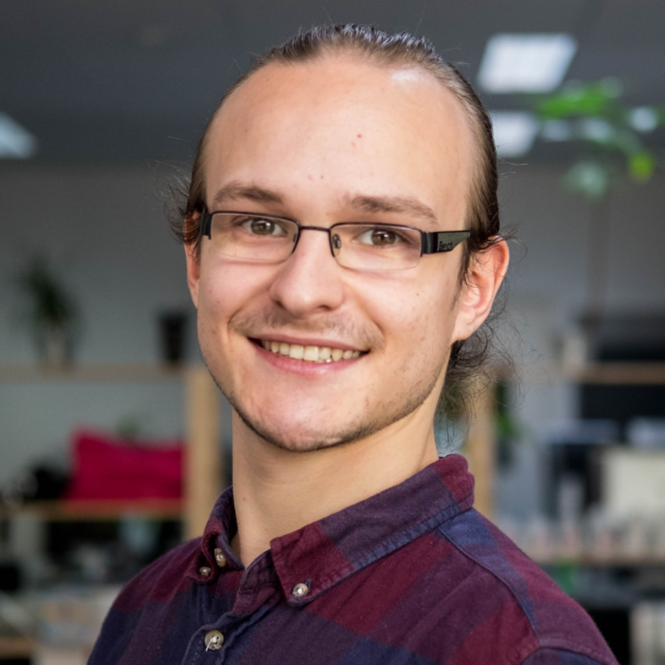

HTML1 eindopdracht INF1J
Voorstellen
Mijn naam is Falko Schoonewille. Ik ben 23 jaar oud en geboren in Emmen. Sinds begin 2000 ben ik met mijn ouders naar groningen verhuist en daar woon ik nog steeds. Vorig jaar heb ik de opleiding Applicatie en Mediaontwikkeling aan het noorderpoort afgerond in de richting webdevelopment. Na een tussenjaar te hebben gehad ben ik begonnen aan HBO informatica, in de stad waar ik ben geboren.
Stage 2016
Hobbies
Muziek maken
Programmeren
Filosoferen
Muziekschool
Ik heb er geluk mee gehad om te zijn geboren in een muziekale familie. Toen ik nog in Drenthe woonde, wilde ik graag met mijn familie in het orkest spelen. En later ben ik via de muziekschool in een bandje terecht gekomen als gitaarist. Bij die band heb ik drie jaartjes gespeeld en er toen om verschillende redenen mee opgehouden. Indivivueel maak ik nogsteeds veel muziek, en leer nu ook muziektheorie thuis. Hiernaast staat een video van een optreden uit 2012.